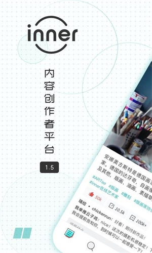
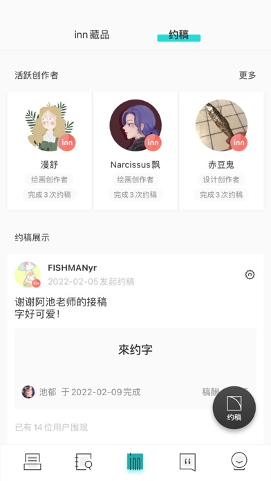

我装了 inner app——一款想把创作社区做成客栈的软件
拿 inner 用了几天，从第一次打开到试着发了篇东西，聊聊这个把社区定位成"客栈"的创作分享平台到底哪儿不一样。
说实话，我一开始是被 inner 的产品描述吸引过去的——"把社区做成客栈"，这话放在今天满屏都是"赛道""流量""算法推荐"的互联网语境里，听起来就像在闹市里开了一家茶馆，门帘一掀里面是另一个节奏。
inner 是一个面向创作者的内容分享社区，支持图文和短内容的发布。它没有那种让人一看就想往上爬的等级体系，也不会把你按粉丝数分成三六九等。整个产品的核心想法很简单：创作者来这里挂作品，支持者在这里逛，彼此之间的关系更像住客和过客，而不是主播和观众。
我从inner app官网拿到安装包，下载过程没什么特别的。登录之后直接进到首页，第一屏就是一个画廊式的作品流——

界面很干净，没有乱七八糟的弹窗和引导条。顶部是几个简单的 tab：推荐、热门、发现，右下角一个发布按钮。说实话第一眼我以为这就是个普通的图片社区，但往下划了十分钟之后，感觉到一些不一样的地方。
热门榜不是流量屠榜
inner 有热门榜，但它的热门榜让我挺意外的。我刷了两天，发现上面经常出现一些完全没听说过的新作者，粉丝数可能才几百，作品也只有十来个，但就因为某一张图或者某一段文字戳中了人，就能冲到前排。
这点和我常用的另一个创作社区完全不一样——那边的热门榜头部永远是那几个几十万粉的大 V，新人想冒头几乎不可能。inner 的热门榜算法似乎在刻意做"去马太效应"的事情，它不会把所有流量都往头部集中，而是给新人留了相当比例的曝光名额。

我后来翻了翻inner app文档才确认了这个设计意图——官方希望热门榜是"反映社区近期动态"的窗口，而不是"头部创作者排行榜"。说实话，这个思路我挺喜欢的。你去一家新客栈，不会关心哪个客人消费最多，你更想知道其他客人最近在聊什么、玩什么。
月刊是个好东西，但也让我有点焦虑
inner 有个挺有意思的东西叫"月刊"——每月一期，围绕一个主题精选社区里的优秀作品。从 2020 年 12 月的 Vol.001 到现在已经出了二十多期了，每期主题都不太一样：初音未来特辑、关于夏天的有话要说、黄昏多变的万种风情、深巷里的酒香……
我第一次看到月刊的时候觉得很酷——这相当于社区官方每月帮你做一次"好东西整理"，想发现新创作者的话，直接翻月刊就行。但回头一想，这也让我有点焦虑。如果我是个创作者，每月的主题选完之后发现自己这月没往那个方向创作，那月刊就和我没关系了。
inner 官方的说法是"入选与否不代表作品好坏，只是是否贴合当期主题"。这话听着没错，但人总是会比较。我觉得这点对新人创作者来说可能是个双刃剑——月刊能帮你快速被发现，但如果连续几期主题都不是你擅长的方向，你可能会觉得自己被排除在社区的"主叙事"之外。
发布审核——inner 的规矩比我想的严
我试着发了一张自己画的水彩练习，加了几个话题标签，点了发布按钮。然后我就发现，inner 的审核比我想象中要认真得多。
提交之后不会立刻就出来，而是会进入一个审核队列，等个几分钟。如果过了就自动出现在你的主页和社区里，没过的话会给你一个明确的拒绝原因——是原创性问题、敏感词、还是话题标签加得太多。
我第一次发布就因为话题标签加了六个被拒了。inner 建议是 2 到 5 个，我当时想让更多人看到就多加了几个。改到四个之后重新提交，第二次就过了。说实话这个规则让我挺佩服——inner 真的在维护社区质量，而不是单纯追求活跃度。
专辑功能——把作品整理一下的理由
inner 有个专辑功能，允许你把同一主题或者同一系列的作品整理到一起。这个功能我一开始没太在意，觉得就是个简单的分类而已。但后来我发现，它其实是 inner 社区氛围的一个缩影。
inner 的专辑不想让你做那种"作品集"式的展示——你懂的，就是那种把自己包装成一个专业艺术家的精心搭建的门面。inner 更希望专辑是一个"正在连载的系列"或者"某个时期的一组尝试"。命名上也有建议："古风插画系列"比"我的作品"好，"关于夏天的随笔"比"随笔合集"好。
这个取向我觉得挺妙的——它鼓励创作者把自己当一个"正在路上的人"，而不是一个已经完成的"作品机器"。
适合谁，不适合谁
用了几天之后，我对 inner 的用户画像有个大概的判断：
如果你是那种不想在流量里卷的创作者——比如画画、摄影、写点短文字，希望有一个干净的空间放自己的东西，偶尔和同好交流一下——inner 很适合你。它不会催你日更，不会用数据羞辱你，你放一张图上去就算今天"开张"了。
但如果你是想认真做内容创作、追求粉丝增长和商业变现的——inner 可能不是首选。它的分发机制刻意去流量化，热门榜给新人机会但也意味着你很难靠持续输出冲到头部；没有打赏、没有广告分成、没有电商入口，目前还停留在纯社区阶段。
最后
inner 给我的整体感觉是，它在互联网上做了一件挺反潮流的事情——在一个大家都在抢注意力、抢流量的时代，它想做一个让人"坐下来歇歇脚"的地方。客栈的比喻不是空话，它的产品设计里处处体现着这个想法：热门榜不做头部屠榜、月刊做主题精选而不是流量排行、专辑鼓励连载而非作品集展示、审核严格到拒绝多加点标签。
这些设计单独看都不算什么惊世骇俗的创新，但凑在一起，就构成了 inner 独特的"客栈气质"。我装它不是因为它功能最强，而是因为它让我觉得，互联网上还有地方在关心"住客"的感受，而不只是"流量"的数字。
inner 的资料在GitHub、Gitee、GitCode 三个仓库都同步维护着，想看更详细的功能说明和使用指南的话，随便找一个镜像就行。